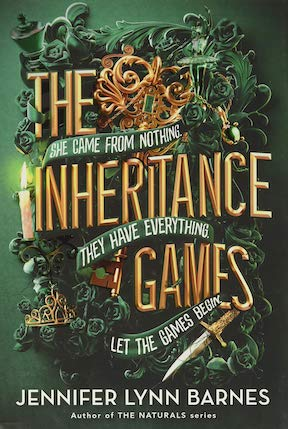

THE INHERITANCE GAMES
📖📚💌
what I thought:
- ⭐ ⭐ ⭐ .5
- The Inheritance Games is a young adult mystery/thriller, published in 2020, from author Jennifer Lynn Barnes. It follows a teenage girl, Avery Kylie Grambs, who is unexpectedly left a billion-dollar fortune by a mysterious philanthropist, Tobias Hawthorne. In his will, Tobias stipulates that Avery must live in his mansion, Hawthorne House, for one year if she’s going to inherit. Avery shares the home with the Hawthornes, who are angry and confused as to why Tobias left his fortune to Avery. The book follows Avery’s journey as she unravels the clues Tobias left behind, hoping to understand why a man she doesn’t remember meeting left her billions of dollars. In her sleuthing, Avery is joined by the four Hawthorne boys, Tobias’s brilliant grandsons, and discovers sordid secrets about the Hawthorne family’s history.
-
I liked this book and thought it was entertaining. The setting and world building, as well as a fast paced storyline made me excited to read it. However, I thoguht that the characters could have been better thought out and had more backstory to them. Becuase of the surface level characters, some of the scenes felt meaningless or unexciting. The protagonist, Avery, has a very basic make up and so does seemingly every other person. I did really like the action element though, and I might read the second and third book in the trilogy. Overall, I give this book a 3.5 star rating.

home